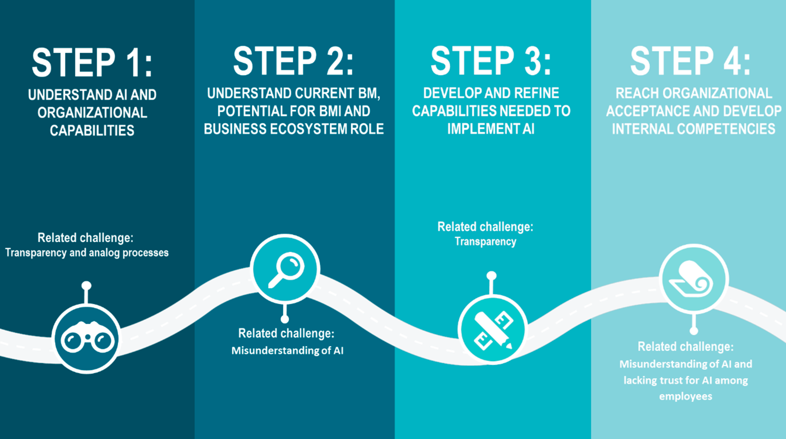

Artificial Intelligence
Refers to the simulation of human intelligence in machines that are programmed to think like humans and mimic their actions. The term may also be applied to any machine that exhibits traits associated with a human mind such as learning and problem-solving.
Introduction
Disruptive innovations, such as artificial intelligence (AI), are changing the rules of competition within industries all over the globe. Opportunities associated with AI are considered to be the most important technological development, with regards to its enormous potential for adding value and competitive advantage.
AI can be described as intelligent systems created to use data, analysis, and observations to perform certain tasks without needing to be programmed to do so. The potential is thus derived from opportunities to automate decision making processes through human-like reasoning—which has created a hype among many industries and firms. AI can be categorized as a capital–labor hybrid with the ability to self-learn, continuously improve and quickly scale-up. As described by O’Leary, AI often create the foundation for decision support through valuable insights and results, collected from large and complex data sets and compressed into a manageable scale.
Baden-Fuller and Haefliger highlight that technology and business performance are interlinked through the business model (BM). The authors also explain the importance of user engagement and openness regarding the BM to enable technological development, which highlights the importance to consider BMs when implementing AI. The process of value creation is one of the main segments of business model innovation (BMI) that is clearly connected to AI through its ability to solve complex problems based on large data-sets. BMI unlocks the potential to refine or expand current product portfolios, and operate more efficient in order to cut costs. However, according to Valter et al. There is a gap between the technological advancements and how organizations operationalize value creation through their BM. This means that BMs must constantly be adapted to the environment it is operating in. In addition to value creation, value capturing and delivery are also vital parts of the BM. Teece describes the essence of a business model as defining the manner by which the enterprise delivers value to customers, entices customers to pay for value, and converts those payments to profit.
Technological progress within the area of AI has led to increased interest among a wide range of businesses. According to the Artificial Intelligence Global Executive Study and Research Report by Ransbotham et al. 90% of the respondents revealed that AI offers opportunities for the company. However, 40% of the respondents reported that significant investments did not result in business gains. Barriers for successful implementation of AI are associated with the technological, cultural, and political domain. However, strategic considerations are considered to be vital as technological improvements do not ensure success when implementing AI applications. This highlights the importance of well-structured BMs to adapt and capitalize on existing technological assets. AI is rather considered to be a catalyst for BMI and thus also an enabler for disruption of industries.
Research within the area of AI in business contexts is growing, however aggregated knowledge within the subject can be considered to be limited and studies that are relevant and rigorous are needed. Managers are left with little support from academia when aiming to implement AI in their firm’s operations which leads to an increased risk of project failure and unwanted results. The hype of AI and its enormous potential implies heavy investments among a broad range of different industries and firms. However, many firms do not perceive business gains when implementing AI applications and the theoretical understanding of the topic is limited. Research within BMI and digital transformation is relatively generic, meaning that some of its insights are applicable on all technological innovations, including AI. Thus, we will look into the research streams of AI to identify challenges, particularly relevant for implementation of AI. Furthermore, research within BMI and digital transformation will be investigated in order to provide a deeper understanding of how companies can transform their BMs with AI and simultaneously manage the identified risks. The purpose of this paper is therefore to increase insights on business model innovation related to the implementation of AI.
Our insights will be presented in a framework that can be used by practitioners to obtain a better understanding for challenges and opportunities when transforming businesses through AI implementation. The framework represents a roadmap that can be utilized as a guide when implementing AI. Additionally, our results will be used to identify gaps in the literature and provide recommendations for future research areas.
Your Artificial Intelligence roadmap:
Step 1: Understand AI and Organizational Capabilities Needed for Digital Transformation
The understanding of AI characteristics will lay the foundation for the forthcoming implementation plan. This initial step will primarily include upper management as the purpose is to produce a conceptual framework for the usage of AI and to evaluate the firm’s capabilities. Questions should be asked: Do we need to develop or refine current capabilities? Do we need to develop new capabilities?
Research highlights data acquisition and infrastructure to be the core aspects for successful AI implementation. Thus, we recommend evaluation of opportunities to digitize analog processes and thus also enable comprehensive data collection. Such actions will subsequently mitigate risks associated with the garbage in–garbage out phenomena.
Furthermore, the transparency issue (i.e., the black-box problem) is mentioned as one of the greatest challenges related to AI. Market research and R&D investigation can thus be valuable in order to assess risks associated with AI. Definition of risks and challenges will further lay the foundation for commitments that aims to mitigate defined risks.
Step 2: Understand Current BM, Potential for BMI, and Business Ecosystem Role
Before BMI is initiated it is essential to understand how value is currently created, captured and delivered. How is technology utilized to improve offerings and exceed customer expectations? Technical uncertainty is derived from technological maturity and the understanding of the technology, but it is also depending on the external market. Thus, the first step is to interrogate current customer relations and how value is delivered, captured, and created to better understand how technological advancements can improve customer satisfaction.
However, it is not sufficient to merely understand how the focal firm relates to its customers. Digital transformations are rarely dependent on individual firms, but rather networks of companies that are collaborating with a common purpose. Therefore, it is crucial for the firm to understand its position in the ecosystem and how they contribute to the final offering. This also includes how surrounding firms complement the focal firm through particular competencies and capabilities. Findings should subsequently be communicated to organizational members when upper management have achieved an understanding of the current BM, potential for BMI, and ecosystem role. This can thereby clarify how and where AI will be used, and thus also avoid misunderstandings of AI.
Step 3: Develop and Refine Capabilities Needed to Implement AI
Further development of key organizational capabilities can be initiated when current BMs, internal and external capabilities, and customer needs are properly understood. The first step is therefore enhancing awareness that will further enable development of tailor-made capabilities with regard to the external market, including surrounding firms within the ecosystem.
Subsequently, a proper understanding of current BM and business ecosystem roles will highlight opportunities and threats followed with implementation of AI. The key organizational capabilities (i.e., strategic, technology, data, and security capabilities) must be attained within the business ecosystem, and should therefore constitute the main focus when evaluating AI readiness. Development of capabilities should particularly observed to manage challenges related to the transparency issue. For instance, this may cover technical problem solving through R&D operations.
As discussed by Matt et al. [6], the introduction of AI will often require substantial transformations of core business operations and capabilities, which induces uncertainty and risk. Firms can decide to undertake two different strategies when transforming businesses—the role as first developer or first follower. Bench marking activities and evaluation of surrounding firms can be performed to inspire development of both technical and strategic solutions.
Step 4: Reach Organizational Acceptance and Develop Internal Competencies
According to Lee et al. Digital transformations often face risks associated with organizational resistance when implementing AI applications. This highlights the importance of reaching organizational acceptance during the implementation phase. Acceptance can be achieved through numerous different commitments, e.g., executive pilot projects, formation of AI-teams, and broad AI training. This will thereby mitigate risks associated with both misunderstandings of AI and lacking trust for AI among employees.
However, benefits derived from educational efforts are not delimited to internal knowledge gains. Firms are rather dependent on the external environment, including cooperating firms or surrounding stakeholders. Thereby, firms should seek for collaborations with partners to strengthen the understanding for AI applications among affected parties within the ecosystem.
Furthermore, feedback loops and continuous evaluation of business performance is paramount both during and after the implementation phase. Feedback loops should be constructed to structure information flow between all affected parties—i.e., customers, partners, suppliers, or internal managers—in order to foster continuous improvements of the business model. Feedback loops will hence lay the foundation for development of internal competences and thus also secure the relevancy of attained knowledge.
Feedback loops and evaluation of customer behavior can be considered to be particularly important when reaching new customer segments, or when new offerings are designed through application of the AI application. Risks should be considered to be higher as the firm lacks experience from the technology, the customer segment, and the solution offered. Hence, continuous communication is essential to minimize uncertainty and gather understanding of the new environment. In the long term, feedback loops will be essential in order to mitigate risks associated with misunderstandings of AI.
Conclusions:
Technical advancements and progress regarding AI related research has led to increased interest among a wide range of industries and firms. However, insufficient understanding regarding implementation of AI applications induces limited business gains. This report intends to increase the understanding of AI implementation by reviewing research within AI, BMI, and digital transformation.
With support from literature concerning business related AI research, we have increased the understanding of challenges connected to AI implementation. Furthermore, research within the topics of digital transformation and BMI is reviewed in order to provide a deeper understanding of how defined risks can be mitigated. The four main takeaways are defined as a need to: (1) understand AI and organizational capabilities needed for digital transformation; (2) understand current BM, potential for BMI, and business ecosystem role; (3) develop and refine capabilities needed to implement AI; and (4) reach organizational acceptance and develop internal competencies.
The four main takeaways presented in this literature review can be used as a guide when evaluating opportunities for AI implementation. Organizational character and desirable conditions differ considerably between firms, meaning that implementation phases will be designed quite differently. However, AI will reshape how business is done and business model innovation will be crucial to succeed with businesses built on AI.
The presented framework is relatively generic and applicable on a wide range of businesses, independently of its characteristics—i.e., role in business ecosystem, size, or industry affiliation. Therefore, the validity of current research within the subject of AI can be considered to be insufficient. This affects our presented framework as it may limit its usefulness in specific contexts. To increase the understanding of AI and how successful AI implementations can be formed, we recommend four further research areas.
First, understanding regarding AI readiness and required preconditions is insufficient. Thus, there is a need for measurable guidelines that can be followed to evaluate firm’s digital maturity level, manage unexpected challenges, and lower risks associated with AI initiatives. By developing this type of matrix, managers will easier understand how and when AI implementations should be initiated.
Second, research regarding digital transformation partly focus on the resolution of industry barriers and the importance of partnerships when reaching new customer segments with advanced offerings. However, the transformation to AI is highly challenging and complex. Therefore, future research on transformation to AI cases would be valuable.
Third, our paper highlights the importance of understanding the role of the industrial ecosystem. Further research should therefore investigate what competencies each ecosystem actor is associated with and what maturity level each role must achieve to successfully progress with AI initiatives.
Finally, business models for AI applications are usually offered as service contracts rather than traditional sales. Therefore, more research on AI connected to digital servitization would benefit the research on AI business models.
That’s it from us, good luck and have fun!